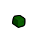
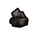
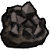
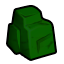
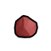
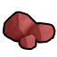
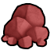
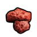
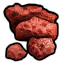

电力工业·前期HSK原版本地补丁×1上游补丁×3原料级·电力工业·钒钾铀矿Uranium
不可塑形建造/打造时选不到这种材质;仅作配方原料(被 10 条配方消耗)
① 起点 · Core 的 Defs 写 Things/Item/Ores/Uranium (20,94,30)

aCore_SK bCore_SK
bCore_SK cCore_SK
cCore_SK② Vile 换成 Things/Item/Ores/Magnetite (137,124,121) ← Resource_Ores_Patch.xml

aVile's Materials Science bVile's Materials Science
bVile's Materials Science
cVile's Materials Science③ 生效(终态) Things/Item/Ores/Uranium (20,94,30) ← 10_Vile贴图还原.xml
 aCore_SKbCore_SK
aCore_SKbCore_SK
cCore_SKThings/Item/Ores/Uranium StackCount (20,94,30)被10条配方消耗贴图链 3 段
护甲 —/—/— 利钝 —/— 价值 10 质量 0.40 Bulk 0.40
stuff —
HSK RAD
产自 Convert to uranium ore(核合成转化器/Transformation of matter II)
源 Core_SK + 游戏本体
Items_Resource_Radioactive.xml ; Items_Resource_Stuff.xml
未标注科技档仅超级物质转换器产出HSK本地补丁×1上游补丁×1原料级·无档·铝土矿Aluminium
不可塑形建造/打造时选不到这种材质;仅作配方原料(被 4 条配方消耗)
① 起点 · Core_SK 的 Defs 写 Things/Item/Ores/Bauxite (255,200,200)

aCore_SK
bCore_SK
cCore_SK③ 生效(终态) Things/Item/Ores/Bauxite (255,200,200) ← 10_Vile贴图还原.xml
 aVile's Materials Science
aVile's Materials Science
bVile's Materials Science
cVile's Materials ScienceThings/Item/Ores/Bauxite StackCount (255,200,200)(255,200,200)被4条配方消耗另有 2 套同名贴图未生效贴图链 3 段
护甲 —/—/— 利钝 0.60/0.90 价值 2 质量 0.10 Bulk 0.10
stuff —
HSK HCM
产自 Convert to bauxite ore(核合成转化器/Transformation of matter II)
源 Core_SK
Items_Resource_Ore.xml